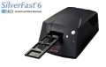

器材库 > 底片扫描仪 > ArtixScan 4000TF

详细规格
发布日期
2003
可支持的胶片格式
35mm幻灯片及负片、APS胶片
扫描元件
5300像素线性CCD
光学分辨率
4000dpi
扫描模式
单次扫描
扫描位深
42位
接口
USB / IEEE 1394
电源要求
100-240V AC, 50/60Hz
尺寸
361 x 150 x 99mm
重量
3.6kg
紫色的红2006-09-27 21:274.38 分
操作性 4.50功能性 4.50美观性 3.50趣味性 4.00耐用性 4.50性价比 4.00解像力 5.00色彩还原 5.00
ie8251422003-11-26 22:374.38 分
操作性 4.00功能性 4.50美观性 4.00趣味性 4.50耐用性 4.50性价比 4.00解像力 4.50色彩还原 5.00
产品图 / 样片
中晶 ArtixScan 4000TF
评测 / 相关文章
该产品暂无存档的评测文章